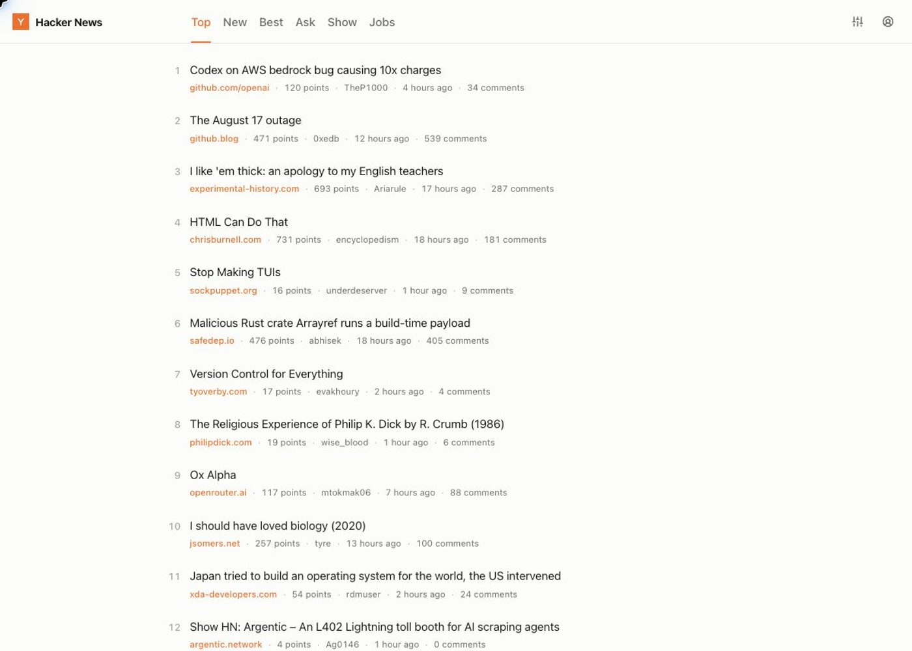
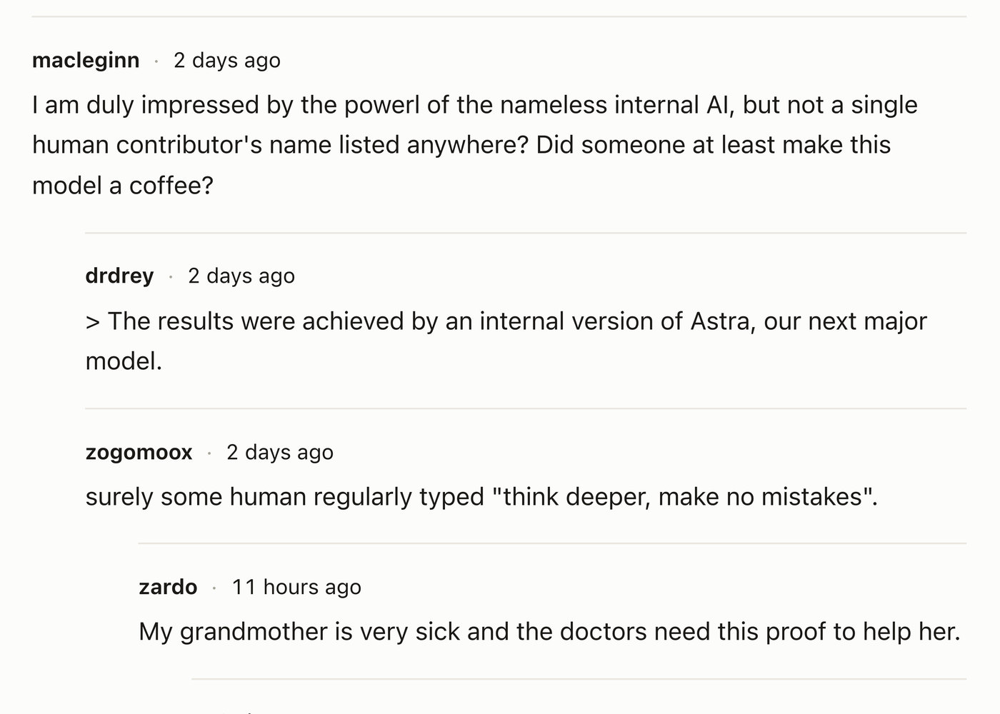
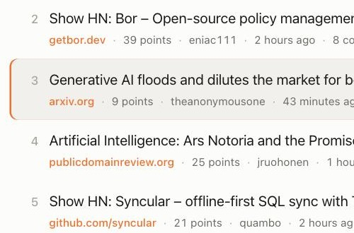
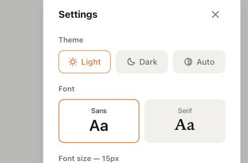

Hacker News,
without the squint.
I got frustrated with modern's lack of maintenance and decided to build my own. Open news.ycombinator.com and easyhn takes over the page.
How it works
All easyhn does is restyle the page Hacker News already sends you. You get the same stories and the same account, just easier to read.
-

Scannable lists
Domain, score, author, age and comment count on every row.
-

Readable comments
Comfortable line lengths, nesting you can follow, and one-click collapse.
-

Keyboard navigation
jk to move, o to open, c for comments.
-

Reading controls
Theme, font, size and density.
And nothing leaves your browser
There's no API and no server in between, and no account to create. Your HN session stays yours, which is why upvoting and replying still work.
Frequently asked questions
How do I install it?
Easyhn isn't on the Chrome Web Store or Firefox Add-ons yet, so it installs manually for now. Download the build for your browser from Releases. There's a separate zip for each browser.
Chrome: unzip
easyhn-<version>-chrome.zip first, then open
chrome://extensions, turn on Developer mode, choose
Load unpacked and select the unzipped folder.
Firefox: open
about:debugging#/runtime/this-firefox, choose
Load Temporary Add-on and select
easyhn-<version>-firefox.zip itself. Don't unzip it. Firefox
drops temporary add-ons when it restarts.
Does anything I read leave my browser?
No. Easyhn restyles the markup Hacker News already sent to your browser. There's no API, no server in between, no tracking and no account.
Can I still upvote and reply?
Yes. Log in from the easyhn header. The upvote arrows and the inline reply box then work through your existing Hacker News session.
Does it break the rest of Hacker News?
No. Pages easyhn doesn't redesign are left untouched, so everything else on the site works as usual.
What happens if Hacker News changes their HTML?
Because easyhn reads HN's own server-rendered markup, a significant change there can break it. It's MIT-licensed on GitHub, so issues and PRs are welcome.
Free and open source, MIT-licensed, and it never asks you to sign up for anything.
Download for Chrome & FirefoxInstalls manually for now. See the FAQ above.